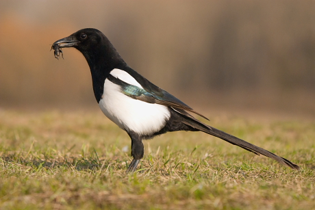
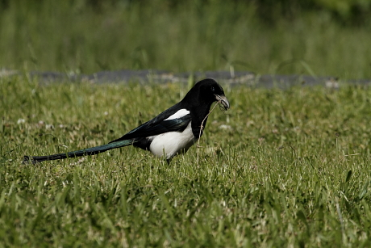

Jellemzői
Testhossza 46 cm (beleértve a kivételesen hosszú farkát is). Tollazata kontrasztos fekete-fehér, a fekete tollak irizáló, fémes fényűek, a megvilágítástól függően zöld, kék vagy lila színben játszanak. A nemek színezete azonos. A fiatalkori tollazat nem fémes fényű. Röpte egyenes, időnként siklik; a földön lépeget és ugrál.
|  | Rendszertani besorolás |
Hangja
Riasztása hangos, jellegzetes, rekedt „cse-cse-cse-cse”, olyan mintha egy fél doboz gyufát rázna valaki. Kártétele elsősorban a kellemetlen, zajos szomszéd mivoltában keresendő. Szívesen költ emberlakta helyeken, fészkelési időszakban sok kellemetlenséget okoz egész napos lármázásával. Széthordja a kirakott szemetet.
Élőhelye
Ligetes, nyílt területek, parkok és kertek madara. A szarka bokrokkal és fákkal tarkított tájak, facsoportok és bozótosok, parkok lakója. Emberlakta környezetben növekvő gyakorisággal él. Magányosan vagy párban él.
Elterjedése
A szarka gyakorlatilag egész Európában és Ázsia nagy részén megtalálható, valamint Észak-Afrika és Észak-Amerika egyes részein is.
ÉletmódjaTáplálkozása változatos, elfogyasztja a rovarokat és más kisebb állatokat, kétéltűeket, más madarak tojásait és fiókáit, gyümölcsöket, magvakat, hulladékot és dögöt is. Táplálkozáskor több madár is összegyűlhet. Fedett vagy tojás alakú, oldalsó bejáratú nagy fészkét viszonylag nagyobb gallyakból hordja össze; általában magasra rakja, jóval lombfakadás előtt, ezért a szarkafészkek könnyen megtalálhatók. A tojó 6-7, sárgás, zöldes vagy szürke alapon barnával és szürkével pettyezett tojást rak. A tojások színe igen változatos. A tojásokat egyedül a tojó költi ki, de a hím eközben eteti a tojót. A költés 17-18 napig tart. A fiatal madarak 3-4 hetesen repülnek ki. A költés áprilisban kezdődik, évente 1 fészekaljat nevel fel. |
 |